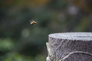

厚朴主站
厚朴文化
厚朴协同
首页
时光影集
文化项目
网站设计
书籍画册
软件开发
厚朴学堂
博雅书架
书海畅游
人生百味
影中漫步
诗词漫游
环保公益
前沿热点
绿色化学
菩提一叶
慈心护生
厚朴厨房
more
时光影像

more
最新文章
2017-09-08
《中国国家地理》2017年第08期
2017-08-31
《程序员》2017年08月
2017-08-31
《程序员》2017年07月
2017-06-14
《中国国家地理》2017年第05期